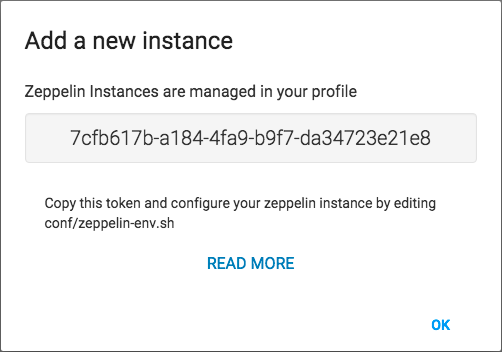

Zeppelin instances
Connecting your Zeppelin Instances to ZeppelinHub is the first step to start sharing your notebooks.
Add a Zeppelin instance
You can connect your Zeppelin instance to your ZeppelinHub account by clicking on Add New Instance button either on your left-side menu or your Settings page.
After you input a descriptive name for your Zeppelin instance, a Token will be generated.
You can then see the following figure with your Instance's Token string.

You can now use that token to configure Zeppelin.
Managing your Instances/Token
You can Manage your Instances/Tokens on your Settings page.
Be carefull when removing an Instance, as it imply that you no longer want to syncronize that Zeppelin instance with Zeppelinhub, and will also remove all notebooks related to this Instance from Zeppelinhub.